4. La vue et son modèle
Jusqu'ici, les actions fabriquaient elles-mêmes leur réponse : du texte, du JSON, quelques balises HTML écrites dans une chaîne de caractères. Dans une application MVC, c'est le rôle d'une vue : un fichier qui décrit la page HTML, avec des emplacements pour les données que lui transmet l'action, le modèle de la vue.
[Symfony] utilise le moteur de vues [Twig], créé par la même équipe. Une vue [Twig] est un fichier dont le nom se termine par [.html.twig] (le format produit, puis le moteur), rangé dans le dossier [templates] de l'application. C'est un fichier texte, ici du HTML, dans lequel trois sortes de balises sont interprétées sur le serveur :
- [{{ expression }}] : la valeur d'une expression, insérée dans la page ;
- [{% instruction %}] : une instruction (tag) : condition ([{% if %}]), boucle ([{% for %}]), héritage de gabarit ([{% extends %}], [{% block %}]), inclusion ([{% include %}])... ;
- [{# commentaire #}] : un commentaire, qui n'apparaît pas dans la page produite.
Tout le reste est recopié tel quel. Les expressions ne sont pas écrites en [PHP], mais dans le langage de [Twig], plus simple et plus sûr : [modele.titre] désigne la propriété [titre] de l'objet [modele] (ou sa méthode [getTitre()], ou la clé [titre] d'un tableau : [Twig] cherche lui-même) ; les filtres transforment une valeur ([nom|upper] met un nom en majuscules) ; les fonctions calculent ([path('accueil')] fabrique une URL). [Twig] ressemble ainsi à [Jinja2] ([Flask]), dont il s'est inspiré, ou au moteur de [Django] ; il se distingue de [Blade] ([Laravel]) et de [Razor] ([ASP.NET Core]), qui mêlent HTML et code du langage hôte. Une vue [Twig] ne peut pas exécuter n'importe quel code [PHP] : elle ne sait qu'afficher les données qu'on lui donne. C'est voulu : la logique de l'application reste dans les classes. Une vue n'est pas interprétée à chaque requête : à sa première utilisation, [Twig] la compile en une classe [PHP], rangée dans le dossier [var/cache/dev/twig], qu'il réutilise ensuite tant que la vue n'est pas modifiée. Nous verrons à quoi ressemble ce fichier.
4.1. Exemple 13 : une première vue
4.1.1. La configuration : config/bundles.php et config/packages/twig.yaml
[Twig] est intégré à [Symfony] par un bundle, le TwigBundle, qu'il faut ajouter à la liste des bundles de l'application (exemple 01) :
et configurer :
La seule clé indique le dossier des vues : [templates], dans le dossier du projet. C'est d'ailleurs la valeur par défaut. Dans un projet ordinaire, ces deux fichiers sont écrits par [Symfony Flex] quand on installe [Twig] ([composer require twig], cf. introduction).
4.1.2. Le modèle de la vue : src/Modele/PageModele.php
Le modèle de la vue est une simple classe immuable (cf. exemple 03) : les trois informations que la vue affichera. Rien n'oblige à décrire le modèle d'une vue par une classe : on pourrait passer trois variables séparées à la vue. Mais une classe documente ce que la vue attend, et permet à l'éditeur de vérifier le code de l'action. C'est la démarche que suivra l'étude de cas, où chaque vue importante a sa classe de modèle.
4.1.3. Le contrôleur : src/Controller/VuesController.php
- lignes 20-23 : l'action construit le modèle de la vue. La fonction [date] de [PHP] met en forme l'heure courante : [H] les heures, [i] les minutes, [s] les secondes ;
- ligne 24 : la méthode [render] d'[AbstractController] fait fabriquer la page par [Twig]. Le premier paramètre est le nom de la vue : le chemin du fichier, relatif au dossier [templates]. Le second paramètre est un tableau associatif, dont chaque clé devient une variable de la vue, ici une seule, [modele]. [render] rend un objet [Response], dont le corps est la page fabriquée (de type [text/html]) ;
- lignes 31-35 : une autre vue, avec une autre variable ([nom]). Le troisième paramètre de [render] est une réponse à compléter : ici, une réponse de code 404, pour une page d'erreur « maison ». [new Response(status: ...)] passe le code par un paramètre nommé, les autres paramètres gardant leur valeur par défaut ;
- lignes 36-40 : la même vue que l'action [index], avec un autre modèle. C'est l'intérêt de la séparation entre action et vue : une vue peut servir à plusieurs actions.
4.1.4. La vue : templates/vues/index.html.twig
- ligne 5 : un commentaire [Twig] ;
- ligne 6 : [{{ modele.titre }}] insère la valeur de la propriété [titre] de la variable [modele]. Le point est l'opérateur d'accès de [Twig], là où [PHP] écrit [$modele->titre].
Tout ce qui est inséré par [{{ }}] est échappé : les caractères [<], [>], [&], ["] et ['] sont remplacés par leurs entités HTML. C'est le rôle que jouait la fonction [htmlspecialchars] dans l'exemple 09, mais cette fois il est automatique : une vue ne peut donc pas, par inadvertance, insérer dans la page du HTML fourni par un utilisateur.
4.1.5. La vue : templates/vues/inconnu.html.twig
Une vue n'est pas obligée de recevoir un objet : la variable [nom] est une chaîne.
4.1.6. Exécution
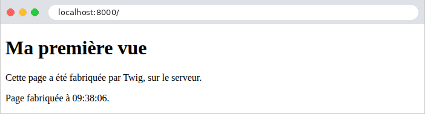
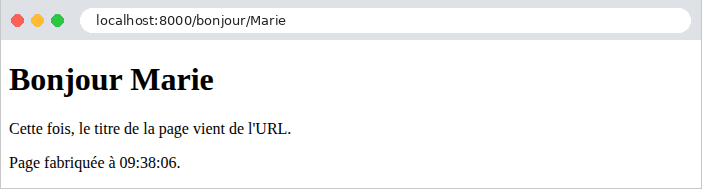
L'heure affichée est celle du fuseau horaire configuré dans [PHP] (la directive [date.timezone] du fichier [php.ini]), ici le temps universel (UTC) ; l'étude de cas montrera comment la fixer pour l'application. La réponse brute montre le travail de [Twig] : les balises [{{ }}] ont été remplacées par leurs valeurs, le commentaire a disparu.
La page d'erreur « maison », puis un nom contenant du HTML ([<b>martin], encodé dans l'URL) :
La balise [<b>] a été échappée, sans que l'action ni la vue aient rien eu à faire (l'apostrophe aussi : [']). Voici enfin la vue compilée par [Twig], telle qu'on la trouve dans le dossier [var/cache/dev/twig] (sous un nom calculé, comme [9e/9e42179990bdaebfeb73b2435744b0e7.php]), réduite à l'essentiel :
La vue est devenue une classe [PHP], dont la méthode [doDisplay] produit la page morceau par morceau ([yield]). Chaque [{{ modele.titre }}] est devenu un appel de [CoreExtension::getAttribute] (qui cherche la propriété, la méthode ou la clé [titre]), passé à la méthode [escape] (l'échappement). Une vue [Twig] n'est donc qu'une façon plus sûre et plus lisible d'écrire un fichier [PHP] qui fabrique du HTML.
4.2. Exemple 14 : le langage Twig
Cet exemple réunit dans une seule vue les principales constructions de [Twig].
4.2.1. Le modèle et l'action
Le modèle de la vue est décrit par trois classes immuables, chacune dans son fichier ([PHP] n'impose pas une classe par fichier, mais le chargeur de classes de [Composer], lui, cherche la classe [App\Modele\Produit] dans le fichier [src/Modele/Produit.php]) :
Le modèle contient des valeurs de types variés : chaînes, [null], booléen, tableau d'objets, tableau vide, objet contenant un autre objet. Les prix sont ici de type [float], pour simplifier les calculs de la vue (l'exemple 06 a montré pourquoi on leur préfère des centimes entiers).
L'action construit le modèle avec des paramètres nommés (cf. exemple 02) : chaque valeur est précédée du nom du paramètre auquel elle est destinée, ce qui rend l'appel lisible malgré le nombre de paramètres.
4.2.2. La vue : templates/bases/index.html.twig
- lignes 9-10 : l'instruction [{% set %}] crée une variable de la vue. Le total des prix est calculé par le filtre [reduce], qui réduit un tableau à une valeur (comme [array_reduce], exemple 06) : sa fonction reçoit la valeur accumulée et l'élément courant ; [(somme, p) => somme + p.prix] est une fonction fléchée de [Twig]. Le filtre [length] rend le nombre d'éléments d'un tableau (ou de caractères d'une chaîne). Ces calculs sont à réserver à la présentation : le calcul appartient normalement à l'action ;
- ligne 15 : une valeur [null] s'affiche comme une chaîne vide. Le filtre [default] remplace une valeur vide (ou absente) par une valeur par défaut ;
- lignes 17-18 : [{{ }}] échappe le HTML (2a) ; le filtre [raw] insère au contraire la valeur telle quelle, sans échappement (2b). [raw] est à réserver à du HTML produit par l'application elle-même, jamais à une saisie de l'utilisateur ;
- lignes 20-24 : une condition : [{% if %}], [{% elseif %}], [{% else %}], [{% endif %}]. Chaque bloc est fermé par une instruction [{% end... %}] ;
- lignes 28-34 : une boucle [{% for ... in ... %}] ... [{% endfor %}]. À l'intérieur, la variable spéciale [loop] décrit l'état de la boucle : [loop.index0] (le numéro de l'itération, à partir de 0), [loop.index] (à partir de 1), [loop.first], [loop.last] (vrais à la première et à la dernière itération), [loop.length] (le nombre d'éléments). Les variables extérieures à la boucle ([modele.nom]) restent accessibles ;
- ligne 30 : l'opérateur ternaire [condition ? a : b] ([Twig] accepte aussi [condition ? a], qui rend une chaîne vide si la condition est fausse) ;
- ligne 38 : une boucle [for] peut avoir un bloc [{% else %}], exécuté si la liste est vide. C'est plus simple qu'un [{% if %}] qui testerait la longueur de la liste ;
- lignes 41-42 : des expressions calculées ([total / nombre]), et les variables de [set]. Le filtre [number_format] met un nombre en forme : deux décimales, la virgule comme séparateur décimal, l'espace comme séparateur des milliers. Nous verrons à l'exemple 16 une façon bien meilleure de mettre en forme des nombres et des montants ;
- ligne 44 : le point traverse les objets ([modele.adresse.ville]), et le filtre [upper] met une chaîne en majuscules (en traitant correctement les caractères accentués) ;
- ligne 46 : l'instruction [{% verbatim %}] recopie son contenu sans l'interpréter : c'est utile quand une page contient des accolades destinées à un framework [JavaScript].
[Twig] a une cinquantaine de filtres ([lower], [capitalize], [trim], [join], [split], [slice], [sort], [date], [json_encode], [escape]...), une quinzaine de fonctions ([range], [min], [max], [random]...) et des tests ([is defined], [is empty], [is null], [is iterable], [is even]...) ; les bundles de [Symfony] en ajoutent ([path], [asset], [form_row], [is_granted]...), et l'application peut écrire les siens (exemple 16).
4.2.3. Exécution
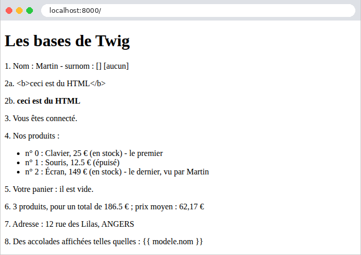
La page produite :
Les commentaires et les instructions ont disparu, mais ils laissent derrière eux leurs espaces : [Twig] retire le saut de ligne qui suit une balise, mais pas l'indentation qui la précède. C'est sans conséquence : le navigateur ignore ces blancs. (Un tiret dans une balise, [{%- ... -%}] ou [{{- ... -}}], retirerait les blancs qui l'entourent.) Un nombre [float] inséré dans la page est écrit avec un point décimal ([12.5]) ; [number_format] a écrit la virgule française.
4.3. Exemple 15 : gabarit, fragments, fichiers statiques
Les pages d'un site partagent le plus souvent une même structure : un entête, une barre de navigation, un pied de page, les mêmes feuilles de style. Plutôt que de répéter cette structure dans chaque vue, on l'écrit une fois, dans un gabarit (layout), que les pages étendent. Cet exemple utilise aussi [Bootstrap], le framework CSS le plus répandu, pour la présentation.
4.3.1. Les fichiers statiques
Une page HTML fait référence à d'autres fichiers : feuilles de style, scripts [JavaScript], images. Ces fichiers, que le serveur envoie tels quels, sont dits statiques. Avec [Symfony], ils sont rangés dans le dossier [public], que le serveur web publie tel quel (exemple 01) : le fichier [public/css/styles.css] est disponible à l'URL [/css/styles.css], sans que [Symfony] intervienne.
Quelques règles CSS en plus de [Bootstrap] : un fond gris clair, le style du pied de page, et celui d'une zone d'erreurs qui servira aux exemples suivants.
[Bootstrap], lui, est utilisé par les exemples 15 à 28. Plutôt que d'en mettre une copie dans le dossier [public] de chacun, les exemples le partagent : il est dans le dossier [exemples/commun/bootstrap]. Ce dossier n'est pas publié par le serveur web : un contrôleur, commun à tous ces exemples, sert ses fichiers. C'est le fichier [exemples/commun/BootstrapController.php] :
- ligne 7 : la classe est dans l'espace de noms [Commun], que le fichier [exemples/composer.json] associe au dossier [exemples/commun] (cf. introduction) : le chargeur de classes de [Composer] la trouve donc, quel que soit l'exemple ;
- lignes 16-17 : une route dont le paramètre [{fichier}] accepte n'importe quelle fin de chemin, barres obliques comprises (exemple 02) : l'URL [/bootstrap/css/bootstrap.min.css] désigne le fichier [css/bootstrap.min.css] du dossier. La route est nommée [bootstrap] ;
- lignes 20-27 : servir des fichiers désignés par l'URL demande une précaution : une URL comme [/bootstrap/..%2F..%2F15-gabarit%2F.env] (les [/] codés [%2F]) ne doit pas donner accès à un fichier situé hors du dossier. La fonction [realpath] de [PHP] calcule le chemin absolu d'un fichier, débarrassé de ses [.] et de ses [..], ou rend [false] si le fichier n'existe pas. On vérifie que le chemin obtenu commence bien par celui du dossier ([str_starts_with]), et qu'il désigne un fichier ([is_file]), sinon une erreur 404. [DIRECTORY_SEPARATOR] est le séparateur des chemins du système : [\] sous [Windows], [/] ailleurs ;
- lignes 29-32 : un objet [BinaryFileResponse] est une réponse qui envoie le contenu d'un fichier. Le type du contenu est choisi d'après l'extension du fichier ([pathinfo] la fournit), pour qu'une feuille de style soit bien annoncée comme [text/css] : un navigateur refuse une feuille de style annoncée comme autre chose.
Chaque exemple qui utilise [Bootstrap] déclare ce contrôleur comme un service, dans son fichier [config/services.yaml] :
- ligne 11 : le service [Commun\BootstrapController], sans réglage particulier ([~] est la valeur [null] en [YAML]) : il reçoit ceux de [_defaults], et [autoconfigure] en fait un contrôleur, dont la route rejoint celles de l'application (exemple 02).
4.3.2. Le gabarit : templates/layout.html.twig
- ligne 6 : la balise [viewport] demande aux navigateurs des téléphones d'afficher la page à la largeur de l'écran, ce qu'attend [Bootstrap] ;
- ligne 8 : l'instruction [{% block %}] marque un emplacement nommé, que les pages qui étendent le gabarit peuvent remplir, en définissant un bloc de même nom. Le contenu écrit entre [{% block titre %}] et [{% endblock %}] est le contenu par défaut de l'emplacement, utilisé par une page qui ne définit pas ce bloc. [nom_site] est une variable globale, présente dans toutes les vues (voir [config/packages/twig.yaml], plus loin) ;
- lignes 10-11 : la fonction [path] fabrique l'URL d'une route nommée (exemple 04), avec les valeurs de ses paramètres, données dans un tableau associatif de [Twig] ([{fichier: '...'}], l'équivalent de [['fichier' => '...']] en [PHP]). La fonction [asset] fabrique l'URL d'un fichier du dossier [public]. Écrire les URL à la main ([/css/styles.css]) fonctionnerait aussi, mais [path] et [asset] s'adaptent si l'application est installée sous un préfixe d'URL ;
- ligne 16 : [{% include %}] insère le contenu d'une autre vue, ici la barre de navigation. La vue incluse voit les variables de la vue qui l'inclut ;
- ligne 19 : l'emplacement que chaque page remplit avec son propre contenu ;
- ligne 23 : la variable [app] est présente dans toutes les vues : [Symfony] y range la requête en cours ([app.request]), la session ([app.session]), l'utilisateur connecté ([app.user], chapitre sur la sécurité), le nom de la route ([app.current_route])... [app.request.pathInfo] est le chemin de l'URL demandée. Le filtre [date] met une date en forme ; la chaîne ['now'] désigne l'instant présent.
La classe [container] de [Bootstrap] centre le contenu et limite sa largeur ; [py-3] ajoute une marge verticale intérieure (padding) : [Bootstrap] fournit des centaines de classes de ce genre, qu'on combine dans l'attribut [class]. La variable globale [nom_site] est déclarée dans la configuration de [Twig] :
Les variables de la clé [globals] sont ajoutées à toutes les vues, sans que les actions aient à les fournir. Une variable globale peut aussi être un service (['@App\Service\...']), dont les vues appelleront les méthodes.
4.3.3. La barre de navigation : templates/fragments/navbar.html.twig
Un fragment : un morceau de page, qui n'a pas de sens seul. Les classes [navbar], [navbar-brand], [nav-link] sont celles de la barre de navigation de [Bootstrap]. Les liens sont fabriqués par [path], à partir des noms des routes.
4.3.4. Une macro : templates/macros.html.twig
- ligne 4 : une macro est un morceau de page qui a des paramètres : c'est la fonction de [Twig]. Elle se déclare par [{% macro nom(paramètres) %}] ... [{% endmacro %}] ; un paramètre peut avoir une valeur par défaut ([fonction = '']). Un fichier peut réunir plusieurs macros. La carte ([card]) est un composant de [Bootstrap].
Une macro ne voit que ses paramètres (et les variables globales) : elle ne voit pas les variables de la vue qui l'appelle. C'est ce qui la rend réutilisable. (La bibliothèque [Symfony UX Twig Component] propose des composants plus riches, des classes [PHP] associées à une vue, que l'on emploie comme des balises HTML : [<twig:Carte nom="..." />] ; nous n'en aurons pas besoin.)
4.3.5. Les pages
- ligne 2 : la page étend le gabarit : [Twig] fabrique la page du gabarit, en remplaçant ses blocs par ceux que la page définit. Dans une vue qui étend un gabarit, tout le contenu doit être dans des blocs : le texte écrit en dehors n'apparaît pas dans la page produite ;
- ligne 4 : [{% import %}] importe les macros d'un fichier, sous un nom au choix ([m]) ;
- lignes 6-12 : le bloc [contenu], qui remplit l'emplacement de même nom. La page ne définit pas le bloc [titre] : l'emplacement garde son contenu par défaut, « Accueil » ;
- ligne 11 : l'appel de la macro [carte], comme une fonction : [m.carte(...)], dans des [{{ }}], puisqu'elle produit du texte à insérer. Sa sortie n'est pas échappée une seconde fois : [Twig] sait qu'elle est déjà du HTML sûr (ses paramètres, eux, ont été échappés dans la macro).
- ligne 4 : le bloc [titre], sur une ligne ;
- lignes 8-15 : une carte par membre de l'équipe, dans une grille de [Bootstrap] ([row], [col-md-4] : trois colonnes sur un écran moyen ou large, une seule sur un écran étroit) ;
- ligne 12 : les paramètres de la macro sont des expressions quelconques.
Le contrôleur ne présente pas de nouveauté :
La troisième page, enfin, n'utilise pas le gabarit :
4.3.6. Exécution
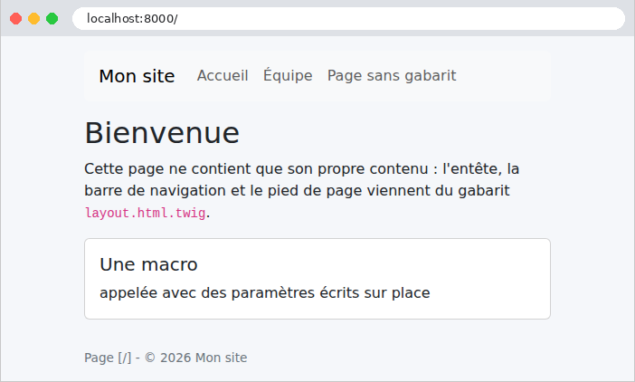
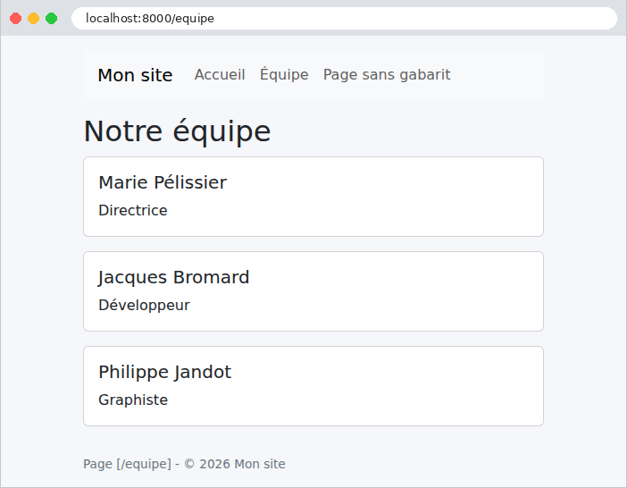
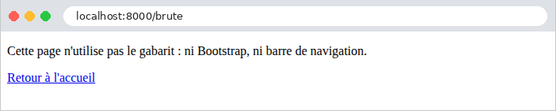
La page de l'équipe, telle que la reçoit le navigateur :
Le navigateur a reçu une page complète : l'assemblage du gabarit, du fragment, de la page et des macros a été fait sur le serveur. Les URL des feuilles de style ont été calculées par [path] et [asset] : ce sont des URL relatives au site. On peut vérifier que les feuilles de style sont bien servies (l'option [-I] de [curl] n'affiche que les entêtes de la réponse) :
Le premier fichier a été envoyé par notre contrôleur ([BinaryFileResponse] ajoute la date de modification du fichier, et autorise sa mise en cache : [Cache-Control: public]) ; le second, directement par le serveur de développement, sans passer par [Symfony]. Une tentative de sortir du dossier, enfin :
(les options [-s -o /dev/null -w "%{http_code}\n"] n'affichent que le code de la réponse ; sous [Windows], on écrit [-o NUL]).
4.4. Exemple 16 : les extensions de Twig
Une vue a souvent besoin de mettre en forme des valeurs : un montant avec sa devise, une date en toutes lettres, un texte en majuscules. Ce code n'a pas sa place dans l'action (qui ne s'occupe pas de présentation), et [Twig] ne permet pas de l'écrire dans la vue (qui ne peut pas exécuter de [PHP], cf. introduction du chapitre). On l'écrit en [PHP], dans une extension de [Twig] : une classe qui ajoute au langage des vues ses propres filtres, fonctions ou tests. Des bibliothèques en fournissent de toutes prêtes, comme [twig/intl-extra], installée avec les exemples, qui met en forme dates et montants selon la langue. Les macros, enfin, fabriquent des morceaux de HTML (exemple 15).
4.4.1. L'extension : src/Twig/FormatsExtension.php
- ligne 14 : une extension de [Twig] hérite de la classe [AbstractExtension]. C'est un service, comme toute classe du dossier [src] ; [Symfony] reconnaît en elle une extension ([autoconfigure]), et la donne à [Twig] ;
- lignes 17-19 : l'extension a besoin de la langue de la requête en cours. Elle reçoit la pile des requêtes ([RequestStack]), un service de [Symfony] qui connaît la requête en cours (il y a une pile, parce qu'une requête peut en déclencher une autre, en interne) ;
- lignes 22-28 : la méthode [getFilters] rend les filtres de l'extension : pour chacun, son nom dans les vues, et la fonction qui le réalise. [$this->monnaie(...)] (avec les trois points) n'appelle pas la méthode : il en fait une valeur, une fonction qu'on pourra appeler plus tard (une first-class callable). Une extension peut de même fournir des fonctions ([getFunctions]) et des tests ([getTests]) ;
- lignes 33-37 : la mise en forme d'un montant, reçu en centimes (cf. exemple 06). Elle dépend de la langue : en français, [1 149,90 €] (espace pour séparer les milliers, virgule décimale, symbole après le montant) ; en anglais, [€1,149.90]. La classe [NumberFormatter] de l'extension [intl] de [PHP] connaît les conventions de tous les pays (elle utilise les données du projet CLDR d'Unicode) : on la crée pour une langue et un style (ici [CURRENCY], les montants), et [formatCurrency] met en forme un montant, la devise étant désignée par son code international ([EUR], [USD]). Le premier paramètre du filtre est la valeur filtrée ; les suivants sont ses paramètres dans la vue ([prix|monnaie('USD')]) ;
- lignes 40-44 : la mise en forme d'une date, par la classe [IntlDateFormatter] de l'extension [intl] : le style [FULL] écrit la date en toutes lettres, avec le jour de la semaine ([dimanche 27 septembre 2026]) ; le style [NONE], pour l'heure, ne l'écrit pas. Le type [DateTimeInterface] accepte toutes les dates de [PHP] ;
- lignes 46-49 : la langue ([fr], [en]) de la requête en cours, ou le français s'il n'y a pas de requête (dans une commande de la console, par exemple). Nous allons voir qui la fixe.
4.4.2. La langue de chaque requête : src/EventListener/FixerLangue.php
Chaque requête a une langue (locale), qui vaut, par défaut, la langue [default_locale] de la configuration ([en] si rien n'est configuré). Ici, le paramètre [?lang=en] de l'URL choisit l'anglais, le français est la langue par défaut. Un écouteur de l'événement [kernel.request] (exemple 12) la fixe avant chaque action, par la méthode [setLocale] de la requête. Le paramètre [priority] de l'attribut règle l'ordre des écouteurs d'un même événement : les plus grands passent d'abord (0 par défaut). [Symfony] a lui-même plusieurs écouteurs de [kernel.request] : le routage (priorité 32), puis ceux qui préparent les services qui dépendent de la langue (16 et 15). Le nôtre doit s'exécuter entre les deux : 20. La commande [php bin/console debug:event-dispatcher kernel.request] affiche tous les écouteurs de l'événement, dans l'ordre. La langue ainsi fixée ne vaut que pour la requête en cours : la suivante repartira de la langue par défaut. Le chapitre sur l'internationalisation se servira de cette même langue pour traduire les textes.
4.4.3. La configuration : config/services.yaml
- ligne 15 : les filtres de la bibliothèque [twig/intl-extra] sont fournis par l'extension [IntlExtension]. Sa classe n'est pas dans le dossier [src] : on la déclare comme service, et [Symfony] la reconnaît comme extension de [Twig] ([autoconfigure]). (Dans un projet ordinaire, le paquet [twig/extra-bundle], installé par [Symfony Flex], le fait lui-même.)
4.4.4. Le contrôleur : src/Controller/PagesController.php
Les actions transmettent aux vues des valeurs brutes : une date ([new DateTimeImmutable('today')], la date du jour à minuit), des montants en centimes. La mise en forme est l'affaire des vues. La classe [Produit] réunit un nom, un prix (en centimes, cf. exemple 06) et un stock.
4.4.5. Les vues
- lignes 4-6 : une macro qui fabrique un lien de la barre de navigation. Le lien de la page courante reçoit la classe [active] de [Bootstrap], qui le met en évidence. Une macro voit la variable globale [app] (exemple 15) : [app.request.pathInfo] est le chemin de la requête en cours ; [starts with] est un opérateur de [Twig], qui teste le début d'une chaîne. L'opérateur ternaire sans « sinon » ([condition ? ' active']) rend une chaîne vide si la condition est fausse (exemple 14) ;
- lignes 9-11 : un badge de [Bootstrap], vert ([text-bg-success]) ou rouge ([text-bg-danger]) selon le stock. L'opérateur [~] de [Twig] concatène deux chaînes (le [.] de [PHP]).
- ligne 1 : un fragment inclus (exemple 15) n'hérite pas des importations de la vue qui l'inclut : il importe lui-même les macros dont il a besoin ;
- ligne 6 : la même chose qu'avec la macro, écrite directement dans la vue, avec l'opérateur ternaire. [app.current_route] est le nom de la route de la requête en cours. La macro évite de répéter la condition pour chaque lien ;
- ligne 8 : l'appel de la macro ;
- ligne 11 : un paramètre de [path] qui n'est pas un paramètre de la route est ajouté à l'URL, comme paramètre : [/produits?lang=en].
- ligne 7 : notre filtre [date_longue] ;
- ligne 9 : [app.request.locale], la langue de la requête, fixée par l'écouteur [FixerLangue].
- ligne 13 : un filtre de [Twig] ;
- lignes 14-15 : notre filtre [monnaie], avec sa devise par défaut, puis avec un paramètre ;
- ligne 17 : l'appel de la macro [badge] ;
- ligne 24 : le filtre [format_currency] de l'extension Intl : un montant (ici en euros : le total des stocks, calculé par [reduce], divisé par 100), une devise, et la langue de la requête, passée par un paramètre nommé de [Twig] ([locale: ...]). Cette extension fournit aussi [format_date], [format_datetime], [format_number], [country_name], [language_name]... Notre filtre [monnaie] fait donc double emploi : nous l'avons écrit pour montrer comment on écrit une extension.
Le gabarit [layout.html.twig] est une version simplifiée de celui de l'exemple 15 ; son attribut [lang] reçoit la langue de la requête ([<html lang="{{ app.request.locale }}">]).
4.4.6. Exécution
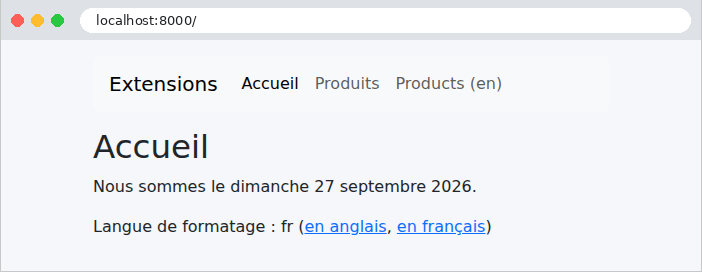
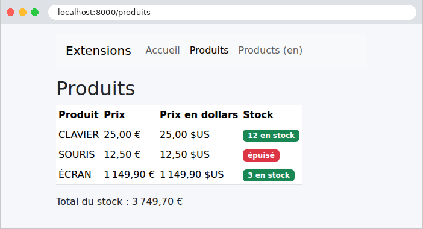
La même page, avec le paramètre [?lang=en]. Seule la mise en forme des nombres change : les textes, eux, sont écrits en dur dans les vues. Le chapitre sur l'internationalisation traduira aussi les textes.
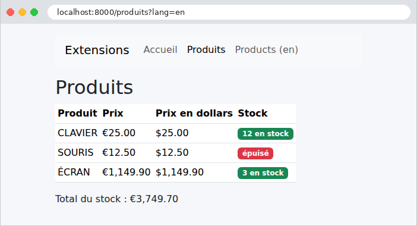
Un extrait du HTML produit :
4.5. Exemple 17 : un formulaire GET
Un formulaire HTML envoie ses champs au serveur, de l'une de deux façons, selon son attribut [method] :
- [method="get"] : les champs sont ajoutés à l'URL, comme paramètres ([/recherche?motCle=le&genre=roman]). C'est la méthode d'un formulaire qui consulte : une recherche, un filtre. L'URL des résultats peut être mise en favori, partagée, rechargée sans risque ;
- [method="post"] : les champs voyagent dans le corps de la requête (cf. exemple 11). C'est la méthode d'un formulaire qui modifie des données : une inscription, un ajout, une suppression.
Ce premier formulaire est une recherche de livres. Il est écrit à la main, en HTML, dans la vue : les exemples suivants confieront les formulaires au composant Form de [Symfony].
4.5.1. Le modèle : src/Modele/Livre.php et RechercheModele.php
- lignes 14-19 : le modèle de la vue contient la saisie de l'utilisateur, pour que le formulaire la réaffiche, la liste des genres proposés, et les résultats.
4.5.2. Le contrôleur : src/Controller/LivresController.php
- ligne 16 : une constante de classe, privée, désignée par [self::GENRES] ([self] désigne la classe courante). Une constante ne peut pas contenir d'objets : les livres sont donc fournis par une méthode statique (lignes 19-28). Dans une vraie application, ils viendraient d'une base de données ;
- lignes 32-33 : deux routes pour la même action : l'attribut [#[Route]] peut être répété. À la première visite ([/]), il n'y a pas de paramètres, et tous les livres sont affichés ;
- lignes 37-38 : les champs du formulaire sont lus comme des paramètres de l'URL (exemple 07). La méthode [getString] rend le paramètre sous forme de chaîne, vide s'il est absent ;
- lignes 40-43 : le filtrage. La fonction [array_filter] garde les éléments d'un tableau pour lesquels la fonction donnée rend [true] : un livre est retenu si le mot-clé est vide ou figure dans son titre ou son auteur (en minuscules des deux côtés, [mb_strtolower] traitant correctement les caractères accentués), et si le genre est vide ou est le sien. [array_filter] conserve les clés des éléments retenus (0, 2...) : [array_values] les renumérote à partir de 0 ;
- lignes 44-46 : le modèle de la vue.
4.5.3. La vue : templates/livres/recherche.html.twig
- ligne 6 : la balise [<form>]. L'attribut [action] est l'URL à laquelle le formulaire est envoyé ; [method="get"] place les champs dans l'URL. Les classes de [Bootstrap] disposent les champs sur une ligne ;
- ligne 8 : un libellé. Son attribut [for] désigne l'identifiant ([id]) du champ qu'il décrit : un clic sur le libellé place le curseur dans le champ, et les lecteurs d'écran lisent le libellé avec le champ ;
- ligne 10 : une zone de saisie. Son attribut [name] est le nom du paramètre envoyé au serveur : c'est le lien entre le formulaire et l'action ([$request->query->getString('motCle')]). L'attribut [value] est la valeur affichée : la saisie précédente, réaffichée (et échappée par [{{ }}], ce qui est indispensable dans un attribut : une saisie contenant un guillemet ["] fermerait sinon l'attribut) ;
- lignes 14-20 : une liste déroulante. Chaque [<option>] a une valeur ([value]), envoyée au serveur, et un texte, affiché. La première option, de valeur vide, signifie « tous les genres » ;
- ligne 18 : l'option choisie à la requête précédente reçoit l'attribut [selected]. C'est un attribut booléen : sa présence suffit, il n'a pas de valeur. L'opérateur ternaire sans « sinon » l'écrit si la condition est vraie, et n'écrit rien sinon. [==] est l'égalité de [Twig] ;
- ligne 23 : le bouton d'envoi ;
- ligne 26 : le nombre de résultats.
4.5.4. Exécution
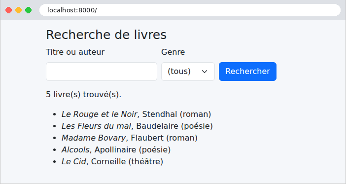
Saisissons [le] et choisissons le genre [roman] :
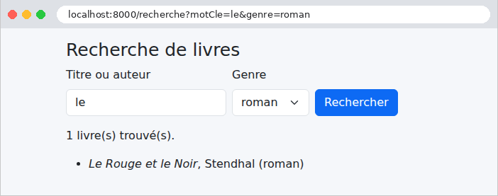
L'URL de la page des résultats contient les champs du formulaire : [/recherche?motCle=le&genre=roman]. La réponse, à partir du formulaire :
« Madame Bovary » n'est pas retenu : « le » ne figure ni dans son titre ni dans le nom de son auteur.
4.6. Exemple 18 : les champs d'un formulaire
Cet exemple présente tous les types de champs d'un formulaire HTML, envoyé cette fois par POST. Il montre comment réafficher chaque type de champ avec sa valeur courante, comment le navigateur envoie les valeurs de chacun, et comment le serveur vérifie qu'une valeur reçue fait bien partie des choix proposés. Écrire tout cela à la main, comme à l'exemple 17, serait long et répétitif. [Symfony] le confie à son composant Form : un formulaire est décrit par une classe, son type ; [Symfony] en fabrique le HTML, lit les champs envoyés, les convertit, les valide, et réaffiche le formulaire avec la saisie et les erreurs. C'est le pendant de [WTForms] en [Python].
4.6.1. Le service des listes : src/Service/ListesService.php
Les listes de choix du formulaire (titres, pays, loisirs, langues) sont fournies par un service, sur le modèle de l'exemple 06 : dans une vraie application, elles viendraient d'une base de données. Chaque liste est un tableau associatif : la clé est le texte affiché, la valeur est celle qui est envoyée au serveur (c'est l'ordre qu'attend le composant Form).
4.6.2. La configuration
- lignes 5-7 : la langue et le traducteur (exemple 09) : les messages d'erreur du composant Form, comme ceux du validateur, seront en français ;
- ligne 9 : la session de l'utilisateur, dont nous reparlerons à l'exemple 20 : le composant Form y range le jeton de la protection anti-CSRF (voir plus loin) ;
- ligne 11 : la protection anti-CSRF des formulaires.
- ligne 5 : le thème des formulaires. [Symfony] dessine chaque champ à l'aide de blocs [Twig] ; un thème en fournit la version qui convient à un framework CSS. Le thème [bootstrap_5_layout.html.twig], livré avec [Symfony], utilise les classes de [Bootstrap] 5 ([form-control], [form-label], [is-invalid]...). L'application peut écrire ses propres thèmes, ou redéfinir quelques blocs d'un thème existant.
4.6.3. Le type du formulaire : src/Form/FormulaireType.php
- ligne 17 : un type de formulaire hérite de la classe [AbstractType]. C'est un service (il est dans le dossier [src]) : il peut recevoir d'autres services, ici celui des listes (ligne 20) ;
- ligne 25 : la méthode [buildForm] décrit les champs, en les ajoutant ([add]) à un constructeur de formulaire (form builder) : pour chacun, son nom, son type, et ses options. Le nom du champ est aussi celui de la donnée qu'il édite ; son libellé, par défaut, est son nom, mis en forme ([nom] devient « Nom ») ;
- lignes 30-35 : un champ [ChoiceType] est une liste de choix, décrite par l'option [choices]. Avec l'option [expanded], il devient un groupe de boutons radio (un choix unique). L'option [label_attr] donne une classe au libellé du groupe : [radio-inline] demande au thème des boutons côte à côte. L'option [constraints] donne au champ ses contraintes de validation (exemple 08) : un titre est obligatoire ;
- ligne 37 : un champ [TextType] est une zone de saisie. L'option [required] vaut [true] par défaut : [Symfony] écrit alors l'attribut HTML [required], que le navigateur vérifie (exemple 19). Elle ne dit rien au serveur : c'est une contrainte ([NotBlank]) qui rend un champ obligatoire pour lui ;
- ligne 39 : un mot de passe ([PasswordType]), qui n'est jamais renvoyé dans la page : son champ est toujours vide à l'affichage ;
- lignes 41-46 : une date ([DateType]), affichée par un seul champ [<input type="date">] (option [widget]). Un tel champ échange sa valeur avec le serveur au format [aaaa-mm-jj], quel que soit le format dans lequel le navigateur l'affiche ; l'option [input] précise que la donnée est une chaîne (plutôt qu'un objet [DateTime], par défaut) ;
- lignes 48-54 : une liste de choix développée, à choix multiples ([multiple]) : des cases à cocher ;
- ligne 56 : une liste de choix non développée : une liste déroulante ;
- lignes 58-64 : une liste non développée, à choix multiples : une liste à sélection multiple, affichée sur quatre lignes (l'attribut HTML [size], donné par l'option [attr]) ;
- ligne 65 : une zone de texte ([TextareaType]), sur deux lignes ;
- ligne 67 : un champ caché ([HiddenType]).
[Symfony] fournit une trentaine de types de champs : [EmailType], [IntegerType], [MoneyType], [UrlType], [CheckboxType], [FileType], [CountryType], [RepeatedType] (exemple 19), [CollectionType] (une liste de sous-formulaires)...
4.6.4. Le contrôleur : src/Controller/FormulaireController.php
- ligne 16 : une seule action, pour les deux méthodes : GET affiche le formulaire, POST le traite. C'est la façon habituelle d'écrire une action de formulaire avec [Symfony] ;
- ligne 20 : les valeurs initiales du formulaire : un tableau associatif, une valeur par champ (un tableau pour un champ à valeurs multiples) ;
- ligne 22 : [createForm] fabrique le formulaire, un objet [Form], d'après son type et ses données initiales ;
- ligne 25 : [handleRequest] examine la requête. Pour un GET, il ne fait rien. Pour un POST qui contient les champs du formulaire, il les recopie dans le formulaire : chaque champ convertit sa valeur (la date, les listes...), vérifie qu'un choix fait partie de ceux qui étaient proposés, puis le formulaire valide les contraintes et le jeton anti-CSRF ;
- ligne 27 : [isSubmitted] : le formulaire a-t-il été envoyé ? ;
- lignes 29-34 : pour l'exemple, la liste de ce que le navigateur a réellement envoyé. Les champs d'un formulaire [Symfony] sont nommés d'après le formulaire : [formulaire[nom]], [formulaire[loisirs][]]. [PHP] les range donc dans un tableau [formulaire] (exemple 10), que l'on parcourt. [(array) $valeur] convertit une valeur simple en tableau d'un élément (un tableau reste un tableau) ; [implode] réunit les éléments d'un tableau en une chaîne, séparés par le premier paramètre ;
- lignes 35-42 : le modèle de la vue reçoit ce qu'a reçu le serveur, le résultat de la validation ([isValid]), les erreurs ([getErrors(true)] : celles de tous les champs), et les données du formulaire ([getData]), converties par chaque champ. L'opérateur [+=] ajoute ces clés au tableau [$modele] ;
- ligne 44 : le formulaire est passé à la vue, qui l'affichera, avec sa saisie et ses erreurs.
4.6.5. La vue : templates/formulaire/formulaire.html.twig
- ligne 6 : la fonction [form_start] écrit la balise [<form>] : la méthode POST et l'URL de la page en cours, par défaut ; le second paramètre ajoute des attributs HTML ;
- ligne 8 : la fonction [form_row] écrit un champ complet : son libellé, sa zone de saisie (avec sa valeur courante), et ses erreurs, avec les classes du thème. [formulaire.titre] désigne le champ [titre] du formulaire. On peut aussi écrire séparément les morceaux : [form_label], [form_widget], [form_errors] ;
- lignes 9-19 : les autres champs, disposés par les classes de grille de [Bootstrap] ;
- ligne 22 : [form_end] écrit les champs qui n'ont pas encore été écrits (ici le champ caché [jeton] et le champ caché [_token], le jeton anti-CSRF), puis ferme la balise [</form>] ;
- ligne 25 : le test [is defined] : la variable [recu] n'existe qu'après un envoi ;
- lignes 30-33 : les erreurs. Chacune est un objet [FormError], dont [origin] est le champ en erreur ;
- lignes 39-41 : une boucle [for] sur un tableau associatif, qui parcourt à la fois les clés et les valeurs. Le test [is iterable] distingue les tableaux (réunis par le filtre [join]) des valeurs simples.
On aurait pu écrire tout le formulaire d'une ligne : [{{ form(formulaire) }}]. Les fonctions [form_start], [form_row] et [form_end] permettent de disposer les champs à sa guise.
4.6.6. Exécution
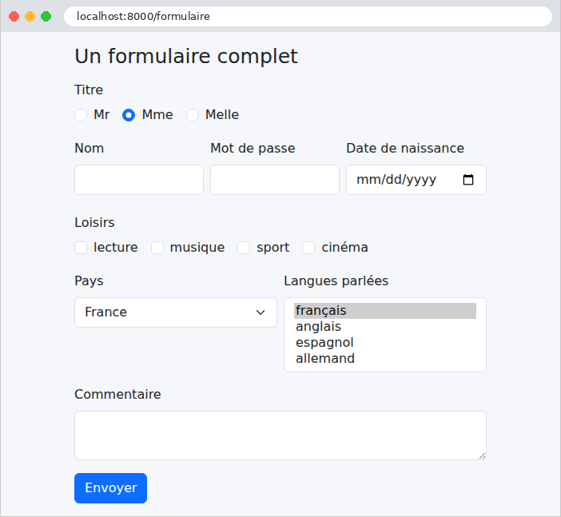
Les valeurs initiales sont visibles : le bouton radio « Mme », le pays « France », la langue « français ». Le HTML produit (extraits, présentés sur plusieurs lignes) :
[Symfony] a tout écrit : les identifiants ([formulaire_titre_1]), les libellés reliés à leurs champs, les noms terminés par [[]] des champs multiples (exemple 10), les attributs [checked] et [selected] des valeurs courantes, les classes de [Bootstrap]. Le dernier champ caché, [formulaire[_token]], porte le jeton anti-CSRF. Une attaque CSRF (Cross-Site Request Forgery, falsification de requête inter-sites) consiste, pour un site malveillant, à faire envoyer par le navigateur de sa victime un formulaire vers notre application. Le navigateur y joint les cookies de notre application, et donc la session de l'utilisateur connecté : la requête semble légitime. La parade : chaque formulaire de notre application contient un jeton, aléatoire, lié à la session de l'utilisateur, que le site malveillant ne peut pas connaître. Le composant Form ajoute ce jeton à chaque formulaire, et [handleRequest] refuse un formulaire dont le jeton est absent ou faux : aucun formulaire ne peut l'oublier. (L'attribut [data-controller] sert à un script facultatif de [Symfony], qui renforce la protection ; il est sans effet ici.) Remplissons le formulaire et envoyons-le :
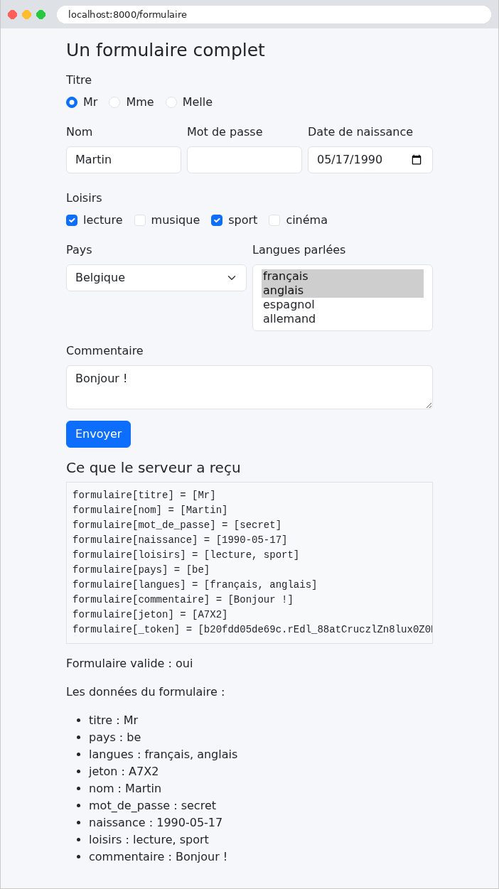
La page montre ce qu'a reçu le serveur : un paramètre par champ, avec plusieurs valeurs pour les cases à cocher et la liste multiple ; le mot de passe a été envoyé, mais n'est pas réaffiché dans son champ. Le champ caché [jeton] a été renvoyé tel quel : c'est le moyen de faire faire un aller-retour à une information que l'utilisateur ne voit pas (l'étude de cas s'en sert pour le numéro de version d'un enregistrement). Mais un champ caché n'est pas un champ protégé : l'utilisateur peut le modifier avec les outils de développement de son navigateur, et le serveur doit le vérifier comme tout autre champ. Le jeton anti-CSRF fait lui aussi partie des champs reçus ; il ne fait pas partie des données du formulaire.
Envoyons maintenant, avec [curl], un formulaire sans jeton, et avec un pays qui n'était pas proposé :
Le formulaire est invalide, pour trois raisons : le jeton anti-CSRF manque (l'erreur est attachée au formulaire lui-même), aucun titre n'a été envoyé, et le pays [xx] ne fait pas partie des choix. Ce dernier contrôle est fait par le champ [ChoiceType] lui-même, sans que nous l'ayons demandé : un utilisateur malveillant peut envoyer n'importe quoi, pas seulement ce que proposait la page. Les messages sont en français : ceux du composant Form sont traduits par [Symfony], comme ceux du validateur (exemple 09). La réponse a le code 422 (Unprocessable Content) : [render] le choisit de lui-même quand on lui passe un formulaire envoyé et invalide. Remarquons la différence avec d'autres frameworks : [Symfony] ne refuse pas la requête avant l'action ; c'est le formulaire qui la déclare invalide, et l'action qui décide de la suite.
Pour que le jeton soit accepté, [curl] doit se comporter comme un navigateur : demander d'abord le formulaire, en conservant le cookie de session (option [-c], qui enregistre les cookies reçus dans un fichier), puis renvoyer le cookie (option [-b]) et le jeton lu dans la page. L'option [--data-urlencode] encode elle-même la valeur du jeton :
(le jeton est celui de la page reçue par la première commande). Il ne reste que les deux erreurs de saisie.
4.7. Exemple 19 : la validation d'un formulaire
Un formulaire d'inscription, dont chaque champ a ses contraintes. En cas d'erreur, le formulaire est réaffiché avec la saisie de l'utilisateur et un message sous chaque champ erroné. Cet exemple utilise la démarche standard de [Symfony] : les données du formulaire sont un objet, dont la classe porte les contraintes (exemple 08) ; le formulaire remplit l'objet, puis le valide.
Les fichiers [config/packages/framework.yaml] et [config/packages/twig.yaml] sont ceux de l'exemple 18.
4.7.1. Les données et leurs contraintes : src/Modele/Inscription.php
- ligne 8 : une classe ordinaire, dont les propriétés sont publiques et modifiables : le formulaire les remplira une à une. Toutes sont initialisées à [null] : l'objet est vide au premier affichage ;
- lignes 10-12 : le nom est obligatoire, et ne dépasse pas 20 caractères. Chaque contrainte reçoit ici son message, en français (exemple 09) : [message] pour [NotBlank], [maxMessage] pour le dépassement de [Length] ;
- lignes 15-17 : la contrainte [Email] vérifie qu'une adresse est valide, et exige un nom de domaine complet ([exemple.fr], et non [exemple]) ;
- lignes 19-21 : l'âge est un entier, compris entre 18 et 120 ([notInRangeMessage] : le message de [Range] quand il y a un minimum et un maximum). Le formulaire aura converti la saisie en entier ;
- lignes 23-25 : le mot de passe comporte au moins 6 caractères.
4.7.2. Le formulaire : src/Form/InscriptionType.php
- ligne 23 : l'option [attr] ajoute des attributs HTML à la zone de saisie : [maxlength] limite la saisie dans le navigateur ;
- ligne 24 : un champ [EmailType] produit un [<input type="email">], que le navigateur sait vérifier ;
- lignes 27-31 : un champ [IntegerType] produit un [<input type="number">], et convertit la saisie en entier. Une saisie qui n'est pas un nombre entier ne peut pas être convertie : c'est une erreur de conversion (et non de validation, cf. exemple 08), dont le message est donné par l'option [invalid_message] ;
- lignes 34-39 : un champ [RepeatedType] est fait de deux champs (ici deux [PasswordType]), qui doivent recevoir la même valeur : le mot de passe et sa confirmation. Chacun a ses options ([first_options], [second_options]) ; si les deux saisies diffèrent, c'est l'erreur [invalid_message]. Les données n'ont qu'une valeur, le mot de passe ;
- lignes 43-46 : la méthode [configureOptions] règle les options du formulaire lui-même : [data_class] indique que ses données sont un objet [Inscription]. Chaque champ lit et écrit la propriété de même nom.
[Symfony] sait aussi deviner le type d'un champ à partir des contraintes et du type de la propriété : [->add('age')], sans type, produirait un [IntegerType], avec les attributs [min] et [max] déduits de [Range]. Nous l'avons écrit explicitement, pour la clarté.
4.7.3. Le contrôleur : src/Controller/InscriptionController.php
- ligne 19 : le paramètre [?html5=true] active la validation par le navigateur (voir plus loin). [#[MapQueryParameter]] le convertit en booléen (exemple 07) ;
- lignes 21-23 : l'objet [Inscription], vide, est confié au formulaire ; [handleRequest] le remplira à partir des champs envoyés ;
- lignes 26-28 : [isValid] est vrai si chaque champ a pu être converti, et si l'objet [Inscription] respecte ses contraintes. La page de bienvenue reçoit alors l'objet, rempli (l'exemple suivant montrera qu'il vaut mieux, après un POST réussi, rediriger) ;
- lignes 31-32 : sinon, le formulaire est affiché : au premier affichage, vide ; après un envoi invalide, avec la saisie et les erreurs, et le code 422 (exemple 18).
Le formulaire invalide est donc réaffiché par l'action POST elle-même, qui dispose de la saisie et des erreurs : c'est la démarche de [Symfony]. D'autres frameworks, comme [Laravel], répondent plutôt par une redirection vers la page du formulaire, en conservant saisie et erreurs dans la session pour la requête suivante.
4.7.4. Les vues
- ligne 12 : l'attribut [novalidate] désactive la validation par le navigateur : le formulaire est envoyé tel quel, et seul le serveur le valide. C'est ce que nous voulons observer d'abord. L'opérateur ternaire choisit entre deux tableaux d'attributs ;
- ligne 14 : [form_widget(formulaire)], appliqué au formulaire entier, écrit tous ses champs, chacun avec son libellé, sa saisie et ses erreurs : c'est le thème de [Bootstrap] qui encadre en rouge un champ erroné (classe [is-invalid]) et affiche son message dessous (classe [invalid-feedback]). Nous n'avons eu à écrire aucun composant pour cela ;
- lignes 19-25 : le bloc [bas_de_page], défini par le gabarit (voir plus loin). [formulaire.vars] contient les informations du formulaire, calculées pour la vue : [submitted] (envoyé ?), [valid] (valide ?), [value], [errors]... Si le formulaire a été envoyé et qu'il est invalide, un message général, dans une zone dont le style est défini par [public/css/styles.css] (exemple 15). L'attribut [role="alert"] le signale aux lecteurs d'écran.
- ligne 15 : un second bloc, [bas_de_page], vide par défaut : un gabarit peut avoir autant de blocs qu'il en faut.
[inscription] est l'objet [Inscription], rempli et validé : le nom a été débarrassé de ses espaces (voir plus loin), l'âge est un entier.
4.7.5. Exécution
Envoyons un formulaire plein d'erreurs : un nom fait d'espaces, une adresse sans domaine complet, un âge de 12 ans, un mot de passe trop court, et une confirmation différente :
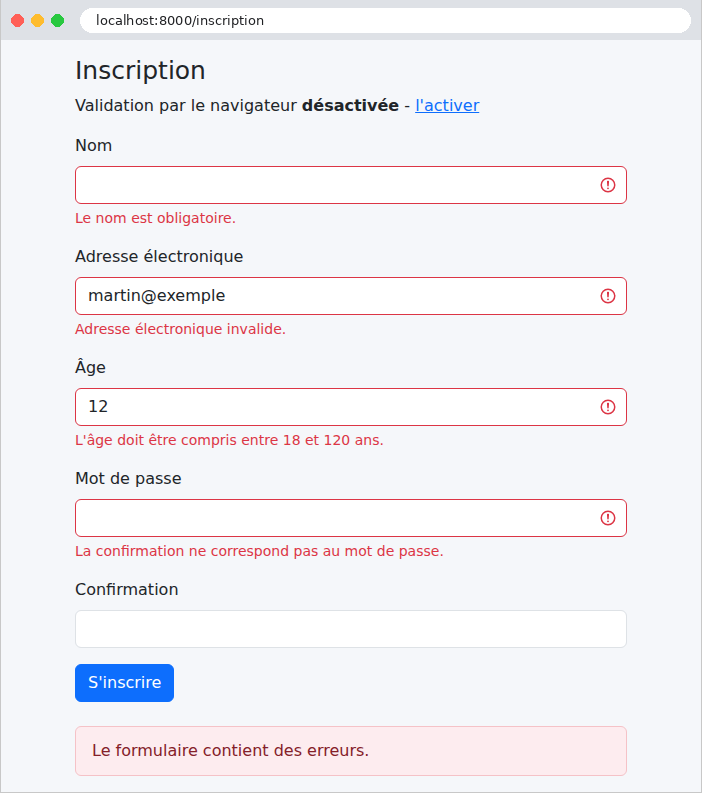
La saisie a été conservée (sauf les mots de passe), et chaque erreur est signalée sous son champ. Le nom fait d'espaces est signalé comme absent : le composant Form retire les espaces qui entourent chaque saisie (option [trim] des champs, vraie par défaut). Le mot de passe, lui, n'a qu'une erreur, celle de la confirmation : quand les deux saisies diffèrent, le champ [RepeatedType] ne fournit aucune valeur, et la longueur n'est pas vérifiée. L'URL est celle du formulaire, [/inscription] : la page a été affichée par l'action, en réponse au POST. Avec [curl], en fournissant le jeton anti-CSRF comme à l'exemple 18, on peut aussi envoyer ce qu'un navigateur n'enverrait pas, un âge non numérique :
On voit la saisie réaffichée, les attributs HTML5 ([required], [min], [max]), la classe [is-invalid], le message de conversion, et les attributs [aria-...], qui relient le champ à son message pour les lecteurs d'écran.
4.7.6. La validation par le navigateur
Supprimons l'attribut [novalidate], en suivant le lien « l'activer » (paramètre [?html5=true]). Le navigateur vérifie alors lui-même les attributs [required], [type="email"], [min], [maxlength]... avant d'envoyer le formulaire, et affiche ses propres messages, dans une bulle placée sous le premier champ erroné (« Veuillez renseigner ce champ », « La valeur doit être supérieure ou égale à 18 »...) : le formulaire n'est pas envoyé tant qu'il reste une erreur. [Symfony] a écrit ces attributs de lui-même : [required] pour tout champ (option [required], exemple 18), [type="email"] et [type="number"] d'après le type des champs ; [maxlength], [min], [max] et [minlength] viennent de nos options [attr]. Ils doivent rester cohérents avec les contraintes.
Cette validation est confortable pour l'utilisateur : immédiate, sans aller-retour avec le serveur. Mais elle ne remplace pas celle du serveur : un utilisateur peut la désactiver, et un programme comme [curl] l'ignore complètement. La règle est absolue : le serveur valide toujours, la validation par le navigateur n'est qu'un confort en plus.
Une saisie correcte, enfin. Le nom, saisi avec des espaces autour, a été nettoyé par le formulaire :
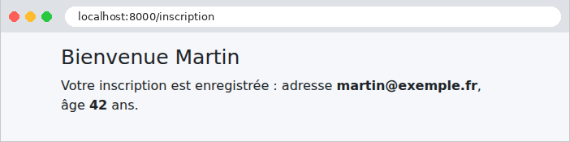
4.8. Exemple 20 : le schéma Post / Redirect / Get
Quand une action POST répond par une page, cette page est le résultat d'un POST. Si l'utilisateur la recharge (touche [F5]), le navigateur renvoie le POST, après un avertissement que peu de gens lisent : la commande est passée deux fois, le message publié deux fois. Le schéma Post / Redirect / Get (PRG) évite ce problème : une action POST qui a réussi ne rend pas de page ; elle répond par une redirection (exemple 04) vers une page GET, que le navigateur demande aussitôt. Recharger cette page ne fait que refaire le GET.
Il reste un problème : la page GET voudrait afficher un message (« la tâche a été ajoutée »), mais c'est l'action POST qui le connaît, et elle ne peut pas transmettre de variable à une requête qui n'a pas encore eu lieu. La solution : le message flash, déposé dans la session par l'action POST, conservé jusqu'à ce qu'il soit lu, affiché, puis oublié.
4.8.1. La configuration : config/packages/framework.yaml
- lignes 6-8 : la session de l'utilisateur (chapitre sur les portées) : des données propres à un navigateur, conservées d'une requête à la suivante. Elles sont rangées sur le serveur ; le navigateur n'en détient qu'un identifiant, dans un cookie. [handler_id: null] confie leur enregistrement à [PHP] lui-même, qui range chaque session dans un fichier ; [save_path] choisit le dossier : [var/sessions/dev], pour que nous puissions les examiner. [%kernel.environment%] est l'environnement ([dev]) ;
- ligne 10 : les verrous (le composant Lock, présenté plus bas), rangés dans le dossier [var/lock].
4.8.2. Le service : src/Service/TachesService.php
La liste des tâches est partagée par tous les utilisateurs, et doit survivre d'une requête à la suivante. En [Java], en [C#] ou en [Python], on la garderait en mémoire, dans un service unique. En [PHP], c'est impossible : nous l'avons vu aux exemples 01 et 06, rien ne survit à la requête. La liste doit donc être rangée hors de [PHP] : dans une base de données, un fichier... ou dans le cache de l'application, que nous utilisons ici.
- lignes 16-20 : le service reçoit deux services de [Symfony]. Le premier est le cache de l'application (le service [cache.app], du composant Cache), un magasin de couples clé → valeur, présenté par l'interface normalisée [CacheItemPoolInterface] (la norme PSR-6). Par défaut, il range ses valeurs dans des fichiers, sous le dossier [var/cache/dev/pools] ; en production, on préfère un serveur spécialisé, comme [Redis] (une ligne de configuration). Le second est la fabrique de verrous du composant Lock ;
- lignes 23-28 : [getItem] rend l'élément du cache rangé sous une clé ; [isHit] indique s'il existe, [get] rend sa valeur. Une valeur quelconque (ici un tableau de chaînes) peut être rangée : [Symfony] la sérialise, c'est-à-dire qu'il la transforme en texte, à l'aide de la fonction [serialize] de [PHP] ;
- lignes 35-47 : le serveur de développement, comme un serveur de production, peut traiter plusieurs requêtes en même temps, dans plusieurs processus (la variable d'environnement [PHP_CLI_SERVER_WORKERS] en fixe le nombre pour [php -S]). Deux ajouts simultanés pourraient lire la même liste, y ajouter chacun sa tâche, et la réécrire : la seconde écriture effacerait la première tâche. Un verrou garantit qu'une seule requête à la fois exécute le code qu'il protège : [createLock('taches')] crée un verrou nommé ; [acquire(true)] attend qu'il soit libre, puis le prend ; [release()] le rend. Ici, le verrou est un fichier du dossier [var/lock], verrouillé par le système d'exploitation (la fonction [flock]) ; plusieurs serveurs partageraient plutôt un verrou rangé dans [Redis] ou dans une base de données ;
- lignes 38-47 : le bloc [try] ... [finally] garantit que le verrou est rendu dans tous les cas, même si une exception interrompt le code qu'il protège ;
- lignes 42-43 : l'élément de cache reçoit sa nouvelle valeur ([set]), puis il est enregistré ([save]). Sans durée de vie précisée, il est conservé sans limite ([expiresAfter(3600)] le garderait une heure).
4.8.3. Le contrôleur : src/Controller/TachesController.php
- lignes 29-35 : la saisie est validée à la main, pour ne pas encombrer l'exemple ([trim] retire les espaces qui l'entourent). Une saisie invalide est réaffichée, sans redirection : il n'y a rien à protéger d'un double envoi, puisque rien n'a été modifié ;
- ligne 39 : la méthode [addFlash] d'[AbstractController] dépose dans la session un message flash, de type [succes] (le type est libre : il permet de distinguer les messages de succès, d'erreur...) ;
- ligne 41 : la redirection vers la page GET, nommée [taches] (exemple 04) ;
- lignes 45-50 : le contre-exemple : une page en réponse au POST. L'opérateur [?:] rend son opérande de gauche s'il est « vrai » (ici, une chaîne non vide), celui de droite sinon.
4.8.4. Les vues
- lignes 13-15 : [app.flashes('succes')] rend la liste des messages flash de type [succes], et les retire de la session : un message flash n'est affiché qu'une fois. La classe [alert alert-success] de [Bootstrap] affiche le message dans un cadre vert ;
- lignes 19-21 : le message d'erreur, en bas de page, quand l'action en a passé un.
- ligne 11 : l'opérateur [??] de [Twig] rend son opérande de droite si celui de gauche n'existe pas (ou vaut [null]) : la variable [libelle] n'existe qu'après une saisie invalide ;
- ligne 14 : l'attribut [formaction] d'un bouton envoie le formulaire à une autre adresse que celle de son attribut [action] : un même formulaire peut ainsi déclencher deux actions différentes.
Ce formulaire, écrit à la main, n'a pas de jeton anti-CSRF : pour garder l'exemple simple, nous l'ajouterons à l'exemple suivant.
4.8.5. Où sont conservés les messages flash ?
Entre la requête POST et la requête GET qui suit, le message doit être conservé quelque part : dans la session de l'utilisateur, sur le serveur. Observons-le avec [curl], en conservant les cookies dans un fichier (options [-c] et [-b], exemple 18) :
La réponse au POST est une redirection (code 302, entête [Location]), accompagnée du cookie de session, [PHPSESSID] (le nom que [PHP] donne à ce cookie), qui contient l'identifiant de la session : 32 caractères aléatoires, impossibles à deviner. Ce cookie est [httponly] (le [JavaScript] de la page ne peut pas le lire) et [samesite=lax] (le navigateur ne l'envoie pas avec une requête POST venue d'un autre site). Les entêtes [Cache-Control] et [Expires] interdisent la mise en cache d'une réponse qui dépend d'une session. L'identifiant est aussi le nom du fichier de la session sur le serveur : [var/sessions/dev/sess_1e1f574eccd93268b1eb829dd714a029]. Voici ce fichier, après la requête POST :
C'est le format de sérialisation des sessions de [PHP] : chaque donnée de la session est écrite sous la forme [nom|valeur sérialisée]. [a:1:{...}] annonce un tableau de 1 élément, [s:6:"succes"] une chaîne de 6 octets... On y trouve les messages flash ([_symfony_flashes]), rangés par type, et des métadonnées de [Symfony] ([_sf2_meta] : les dates de création et de dernière utilisation de la session). Suivons la redirection, en renvoyant le cookie :
Le message est affiché, et retiré de la session par [app.flashes]. La session, désormais vide, a même disparu : [Symfony] n'enregistre pas une session vide, et le fichier a été supprimé. Une nouvelle requête GET n'afficherait plus le message. La liste des tâches, elle, est dans un fichier du cache, dont le nom est calculé à partir de la clé ([var/cache/dev/pools/app/VT2eLxVxyZ/T/U/kAplxOBLatpb5XP0GkrA]) :
La première ligne est la date d'expiration de la valeur (0 : jamais), la deuxième la clé, la troisième la liste sérialisée. Quant au verrou, c'est un fichier vide, [var/lock/sf.taches.hngbec7.lock], que le système verrouille le temps d'une modification.
4.8.6. Exécution
Ajout d'une tâche : le navigateur a suivi la redirection ; l'URL est celle de la page GET, que l'on peut recharger sans risque.
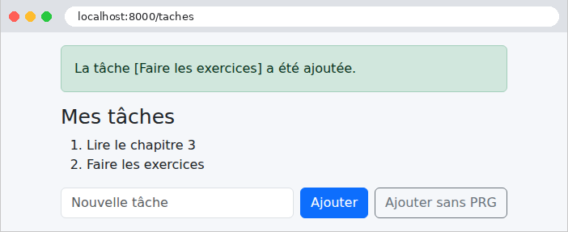
Une saisie invalide, réaffichée avec son message d'erreur :
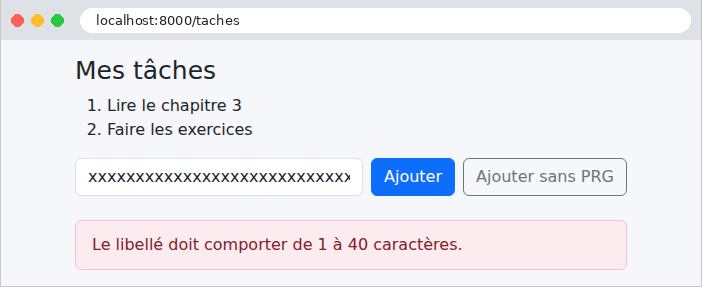
Le contre-exemple : la page est la réponse au POST, et son URL est [/taches/sans-prg]. Si l'on appuie sur [F5], le navigateur demande s'il faut renvoyer le formulaire ; si l'on accepte, la tâche est ajoutée une seconde fois.
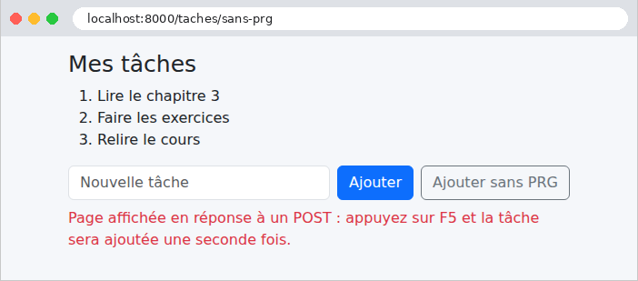
4.9. Exemple 21 : liens, boutons et confirmation
Un principe du protocole HTTP : une requête GET ne modifie rien. Les navigateurs, les moteurs de recherche, les outils qui préchargent les pages suivent librement les liens, sans demander l'avis de l'utilisateur. Un lien « supprimer » ([<a href="/contacts/2/supprimer">]) serait donc dangereux : un robot qui parcourt le site supprimerait tout. Dans une application web :
- consulter se fait par un lien ([<a href>]), qui émet une requête GET ;
- modifier (enregistrer, dupliquer, supprimer) se fait par un bouton placé dans un formulaire, protégé par un jeton anti-CSRF.
Cet exemple gère une liste de contacts, et ajoute une fenêtre de confirmation avant chaque suppression.
4.9.1. La configuration : config/packages/framework.yaml
- ligne 6 : un formulaire HTML ne sait envoyer que des requêtes GET et POST. Or le protocole HTTP prévoit d'autres méthodes : DELETE pour supprimer, PUT et PATCH pour modifier. [Symfony] contourne cette limite : avec l'option [http_method_override], un formulaire POST qui contient un champ caché [_method], de valeur [DELETE] (ou [PUT], [PATCH]), est traité comme une requête de cette méthode. C'est la simulation de méthode (method spoofing) ;
- les autres lignes sont celles des exemples 18 et 20 : la session, la protection anti-CSRF, les verrous.
4.9.2. Le service : src/Service/ContactsService.php
Les contacts sont rangés dans le cache, comme les tâches de l'exemple 20. Chaque contact est un objet immuable [Contact] (un identifiant, un nom, un numéro de téléphone), rangé dans un tableau, avec le dernier identifiant attribué. Quelques points de [PHP] :
- lignes 37-49 : toutes les modifications suivent le même schéma : prendre le verrou, lire les données, les modifier, les réécrire, rendre le verrou. Cette méthode l'écrit une fois ; chaque modification lui passe une fonction (de type [callable], « appelable »), qui reçoit les données et les modifie. La fonction doit modifier le tableau lui-même, et non une copie : son paramètre est déclaré [array &$donnees], où le [&] demande un passage par référence (sans [&], un tableau est copié, cf. exemple 06). Le mot-clé [use] d'une fonction anonyme lui donne accès à des variables de la fonction qui la contient (ligne 65 : [$id], [$nom], [$telephone]) ;
- ligne 44 : les appels s'enchaînent : [getItem] rend l'élément, [set] lui donne sa valeur et rend l'élément lui-même, [save] l'enregistre ;
- lignes 63-75 : un contact est immuable : on en fabrique un nouveau, qui remplace l'ancien dans le tableau. Une affectation est une expression, dont la valeur est la valeur affectée : [return $donnees['contacts'][$i] = new Contact(...)] remplace le contact et le rend ;
- ligne 80 : [++] placé avant une variable l'augmente de 1, et rend la nouvelle valeur ;
- ligne 92 : [array_splice] retire un élément du tableau, et renumérote les suivants ;
- les méthodes rendent [null] pour un contact inexistant : c'est au contrôleur de décider de la réponse.
4.9.3. Le formulaire de la fiche : src/Form/ContactType.php
- lignes 17-18 : les deux champs, obligatoires ;
- lignes 20-21 : deux boutons d'envoi ([SubmitType]) font partie du formulaire. Quand le formulaire est envoyé, le navigateur transmet le nom du bouton cliqué, et le formulaire sait lequel c'est. L'option [attr] leur donne leurs classes de [Bootstrap].
4.9.4. Le contrôleur : src/Controller/ContactsController.php
- ligne 16 : le préfixe de nom [contacts] : la route de la liste, dont le nom est vide (ligne 30), s'appelle donc [contacts], celle de la fiche [contacts_fiche]... ;
- lignes 24-27 : une fonction utilitaire : un contact inexistant arrête l'action par une réponse 404 ;
- lignes 30-34 : l'action GET de la liste, qui ne modifie rien ;
- lignes 37-58 : la fiche d'un contact. En GET, elle affiche le formulaire, rempli avec le contact ; en POST, elle le traite. La même URL [/contacts/2] sert ainsi à consulter et à enregistrer ;
- ligne 45 : les données du formulaire, un tableau associatif, déstructuré : [['nom' => $nom, 'telephone' => $telephone] = ...] range chaque élément dans une variable ;
- lignes 46-54 : [get('dupliquer')] rend le bouton [dupliquer] du formulaire ; [isClicked()] dit si c'est lui qui a envoyé le formulaire (le test [instanceof SubmitButton] rassure l'éditeur sur le type de l'objet). Selon le bouton, l'action duplique ou enregistre le contact ;
- ligne 55 : dans les deux cas, le schéma PRG (exemple 20), avec un message flash ;
- lignes 61-71 : la suppression, traitée par une requête DELETE (la même URL, une autre méthode). Le formulaire de suppression est écrit à la main dans la vue : l'action vérifie elle-même son jeton anti-CSRF, par la méthode [isCsrfTokenValid] d'[AbstractController]. Un jeton est lié à un identifiant (ici [supprimer-contact-2]) : le jeton d'un formulaire ne vaut que pour lui. Un jeton absent ou faux arrête l'action par une erreur 403 (Forbidden). (L'attribut [#[IsCsrfTokenValid('...')]], placé sur l'action, ferait la même vérification.)
4.9.5. Les vues
- ligne 13 : un lien, présenté comme un bouton par les classes de [Bootstrap] ([btn]...) : l'apparence n'a rien à voir avec la méthode HTTP. [path('contacts_fiche', {id: contact.id})] place l'id dans le chemin : [/contacts/2] ;
- lignes 15-22 : un formulaire pour chaque bouton « Supprimer », sans autre champ que la méthode et le jeton. La classe [d-inline] l'affiche sur la même ligne que le lien. L'attribut [data-confirmation] porte le message de confirmation : les attributs [data-...] sont libres, destinés au [JavaScript] de la page ;
- ligne 18 : le champ caché [_method], qui fait de ce POST une requête DELETE ;
- ligne 20 : le jeton anti-CSRF, fabriqué par la fonction [csrf_token] de [Twig], pour l'identifiant [supprimer-contact-2] (l'opérateur [~] concatène, exemple 16).
- lignes 10-11 : les deux boutons du formulaire, écrits par [form_widget], côte à côte ;
- ligne 12 : le retour à la liste : un lien. [form_end] écrira le jeton anti-CSRF, que le composant Form vérifiera lui-même (exemple 18).
4.9.6. La fenêtre de confirmation
Le navigateur sait afficher une boîte de confirmation (fonction [JavaScript] [confirm]), mais elle est peu esthétique, et son apparence dépend du navigateur. On utilise ici une fenêtre modale de [Bootstrap], affichée par quelques lignes de [JavaScript]. La fenêtre est un fragment, inclus dans le gabarit, et donc présent, caché, dans toutes les pages :
- ligne 2 : la classe [d-none] de [Bootstrap] cache l'élément ;
- lignes 3-4 : le fond grisé, puis la fenêtre, dessinés par les classes de [Bootstrap] ;
- ligne 11 : l'emplacement du message ;
- lignes 14-15 : les deux boutons, de type [button] (et non [submit] : ils n'envoient aucun formulaire), distingués par leur attribut [data-action].
- ligne 19 : la fenêtre, incluse dans toutes les pages ;
- ligne 21 : le script, placé en fin de page : quand il s'exécute, les éléments qu'il cherche existent déjà. Il est rangé dans le dossier [public/js].
Le script [public/js/app.js] :
- ligne 3 : le code est enfermé dans une fonction anonyme, exécutée aussitôt : ses variables ne se mélangent pas à celles des autres scripts de la page ;
- lignes 4-6 : la fenêtre, l'emplacement du message, et le formulaire en attente de confirmation ;
- lignes 9-17 : pour chaque formulaire qui porte un attribut [data-confirmation], on intercepte l'événement [submit], déclenché par son envoi. [preventDefault()] suspend l'envoi ; le formulaire est mis en attente, son message ([dataset.confirmation], la valeur de l'attribut [data-confirmation]) est placé dans la fenêtre, qui apparaît ;
- lignes 20-28 : un seul gestionnaire pour les clics dans la fenêtre : [evenement.target] est l'élément cliqué ; son attribut [data-action] dit de quel bouton il s'agit. « Oui » envoie le formulaire en attente, par la méthode [submit()], qui, contrairement au clic sur un bouton, ne déclenche pas l'événement [submit] (sinon, la fenêtre réapparaîtrait) ; « Non » cache la fenêtre.
Sans [JavaScript], le formulaire est simplement envoyé sans confirmation : la page reste utilisable. C'est l'amélioration progressive : le [JavaScript] ajoute un confort, mais l'application ne dépend pas de lui.
4.9.7. Exécution
La liste des contacts :
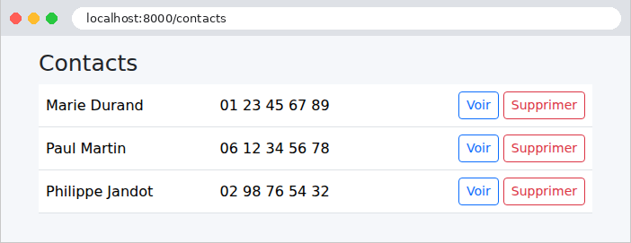
Un clic sur « Supprimer » affiche la fenêtre de confirmation :
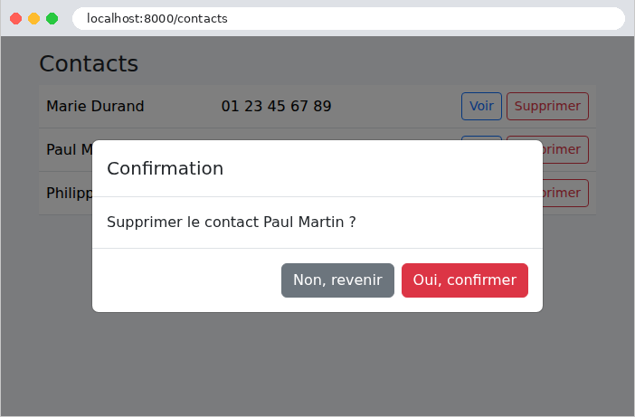
Après confirmation, la requête DELETE (simulée), la redirection, et le message flash :
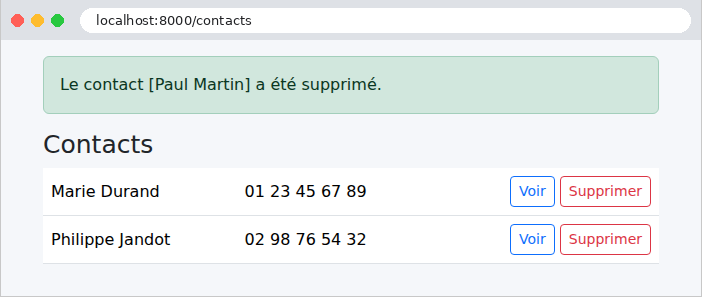
La fiche d'un contact, avec ses deux boutons d'envoi :
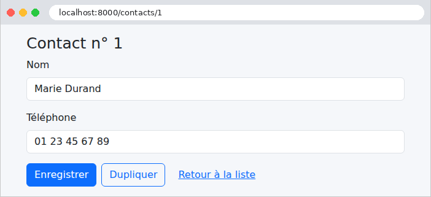
Une requête sans jeton anti-CSRF est refusée, et un contact inexistant donne une erreur 404 :
Les pages d'erreur sont encore celles, détaillées, du mode debug de [Symfony]. Le chapitre sur le cycle de vie d'une requête montrera comment les remplacer par des pages « maison ».